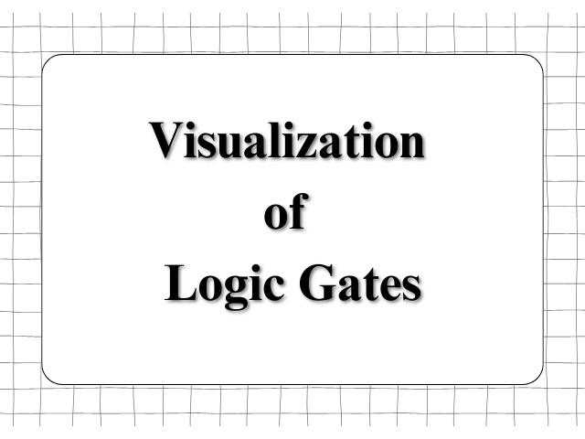

Select Logic Gate

How to Use Logic Gate Visualizer
Follow these simple steps to convert between different number systems:
- Select a logic gate from the dropdown.
- Click the "Visualize" button.
- The corresponding logic gate diagram will be displayed.
- Use this tool to understand how different gates function.